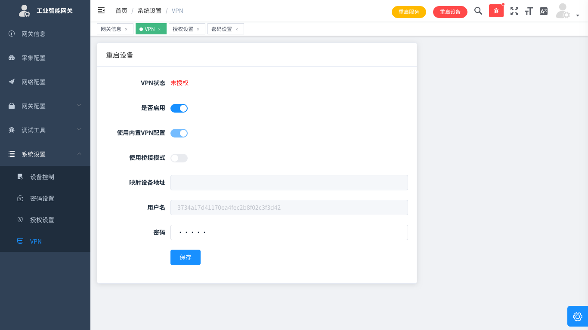
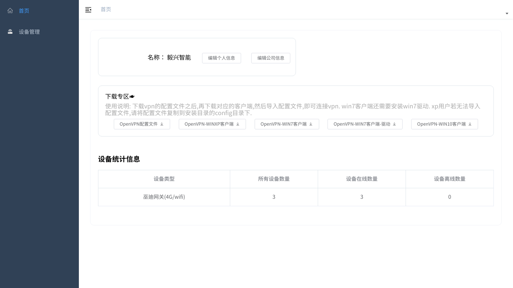
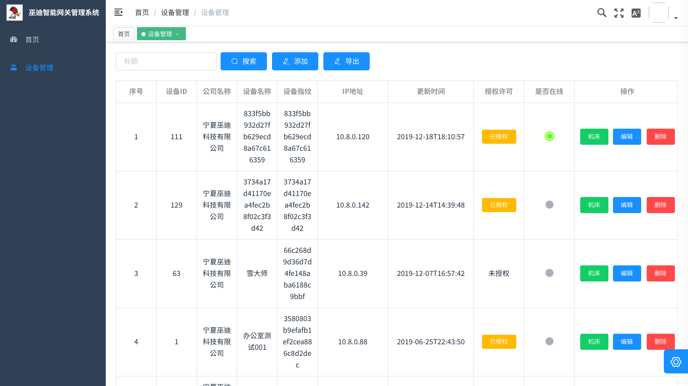
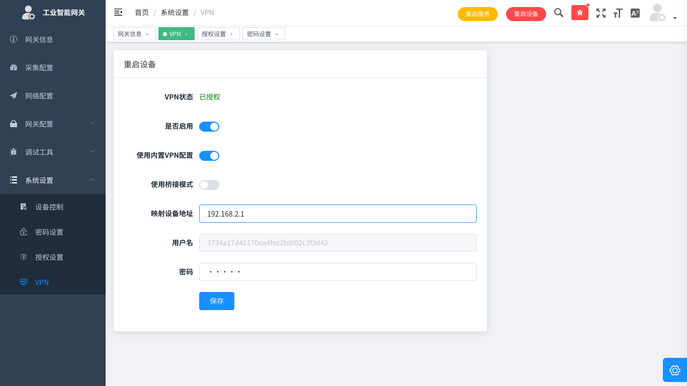
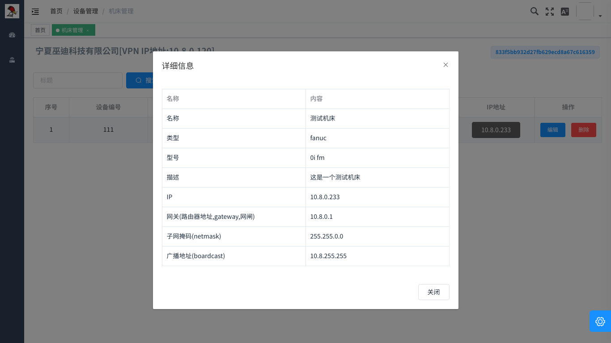

VPN
未授权
- 未授权情况下 用户只可选择是否启用VPN，启用VPN后可远程配置本网关，仅可以搭配本公司网关管理平台，关闭后，任何人将不能远程控制网关，对安全性有要求的公司，可以关闭VPN功能

已授权
- VPN已授权后可以映射采集设备,使用自定义配置文件,以及使用桥接模式
- 巫云配置为本公司默认配置,可搭配本公司平台使用(推荐)
- 映射设备: 地址为欲通过VPN控制的机床设备的IP地址,请确保在调试页面可以ping通,支持TCP和UDP点对点协议,不支持UDP广播,如需映射设备,需要将设备的默认网关(Default Gateway,Fanuc中为路由器地址)设置为本网关的IP地址
- 桥接模式: 桥接模式启用后,VPN会转为交换机模式,所有连接在net1上的机床设备,与采集网关网关本身,与客户电脑的VPN网卡将处于同一虚拟交换机上.本方案适用于VPN批量机床设备,或者机床/PLC的控制协议非tcp协议的情况
- 巫云配置的密码为平台配置密码,需要与平台密码一致
使用方法
首先联系客服获取巫云平台账号
打开巫云管理平台https://custom.woody.vip并登陆
首页有配置文件和软件,请根据自己的平台选择使用

设备列表页面可以看到自己公司所有设备的状态,列表所示的IP地址即为采集网关的VPN IP地址,可以用这个地址管理网关 
映射设备使用方法
- 采集网关的VPN页面将需要映射的设备的IP地址填入映射IP地址
- 需要被映射的设备的网络配置界面需要把Gateway设置为采集网关的ip地址
然后就可实现采集网关到设备的映射,此时在连接了VPN的电脑上可直接对采集网关的VPN IP做机床/PLC上下载功能,即相当于对机床/PLC本身的操作 
桥接模式使用方法
在采集网关的VPN页面,将桥接模式置于打开模式,即可使用VPN桥接模式,此方案比较复杂,适用于映射方案无法解决问题的时候.
本方案的核心为,将机床/PLC与用户置于同一交换机,所以需要用户手动配置IP地址,使网络可达,网络配置方法如下(如果不需要配置IP地址,可以跳过,直接用相关软件进行广播扫描)
机床修改IP地址(推荐)

- 在设备列表页面,点击本次配置的网关的操作列,机床按钮,进入本网关的机床列表
- 填加机床后,会给机床分配一个机床IP,这个IP在全网内都是不冲突的,可以安全使用
- 点击IP地址,会出现完整的IP配置参数
- 在机床的网络界面将本页面展现的网络参数填入,最主要的两个参数为IP地址和子网掩码,其他参数可以不设置(如果不需要配置IP地址,本条可以跳过)
- 至此网络配置完成,如果配置了IP地址,可以直接操作机床
电脑修改IP地址
如果机床已有自己的网络地址,不方便修改,可以通过修改电脑IP达成一个子网的目的
- 在windows 网络中心找到VPN的网卡,驱动包含Tap字段
- 打开cmd(也许需要管理员权限) 输入以下命令
netsh interface ip add address "以太网卡名" 192.168.x.x 255.255.255.0
可能的问题
- 如果有多台网关同时开启了桥接模式,有可能会导致机床IP冲突
- 本方案填加的IP地址,会在VPN重连后丢失,每次重连需要重新配置
特殊网络拓扑
联系售后人员指导配置
注意事项
- VPN可直接打通企业内网,如果对安全性要求很高,需谨慎操作
- 如需私有部署网关管理平台,请联系商务woody@woody.vip
- 由于VPN服务的数据流量会过服务器,必定会导致延迟过高,对于低延迟场景,避免使用VPN